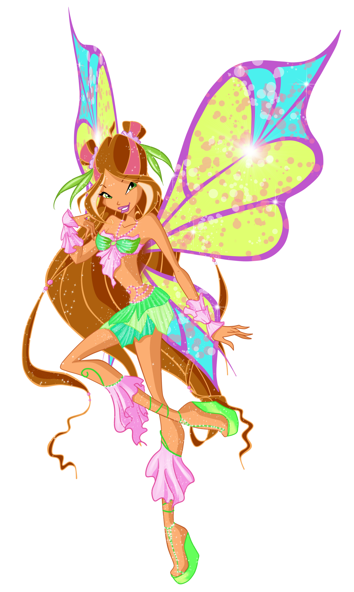

Flora, a Fada da Natureza
Flora é a Fada Guardiã de Lynphea!
Idade: 16 anos
Aniversário: 1 de Março
Biografia:
Flora nasceu no dia 1º de março, e o seu signo astrológico (mágico) é a Dríade. Com jeito de moça comportada, é espirituosa e gentil. Ela é muito romântica, e sonha em seu grande amor. Desde o inicio da série, Flora se mostra a maior especialista em plantas e magias depois de seu pai. Ela sempre foi a mediadora de conflitos entre as próprias Winx e outras fadas. Ela começa a namorar com o Especialista Helia, neto de Saladin, na segunda temporada após conseguir superar sua timidez e revelar seus sentimentos para ele. Graças seus poderes, ela pode falar com as plantas. Amiga das plantas e da natureza, adora fotografar plantas e sentir o perfume das flores. Sua cor favorita é o rosa . Vem do planeta Linphea o planeta da natureza e das flores, onde as flores e a fauna são as mais bonitas.
Poderes:
Poder sobre as plantas e a terra, natureza, flores;
Pedaço da Chama do Dragão (dada por Bloom).
Curiosidades:
1. Geralmente ela é mais vista com Bloom e Stella.
2. Pixie: Chatta.
3. O nome Flora pode dizer a sua magia, pois existe o lado da Flora (plantas) e da Fauna (animais).